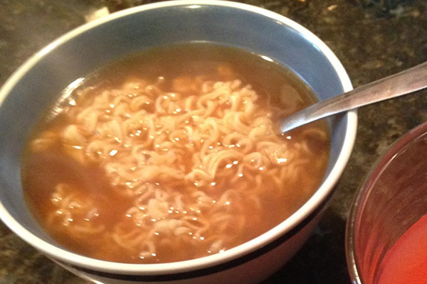

Ramen

A hearty and reinvigorating meal, ramen, particularly instant ramen, is a timeless classic and personal favorite.
Ingredients
- 1 instant ramen package (Maruchan is a popular option, but brands such as Sapporo Ichiban provide a deeper flavor profile)
- 1-2 L water (enough to fill pot)
- Anything else you want to add to the ramen
Steps
- Bring water to a roaring boil.
- Open instant ramen package, place noodles into boiling water.
- When noodles are al dente, remove from heat.
- Add provided seasoning packet.
- Add additional ingredients, such as eggs, ham, corn, etc.
- Burn tongue on soup, then wait 5 minutes to consume.